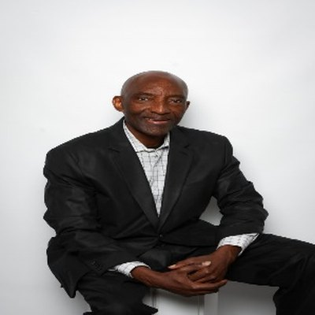
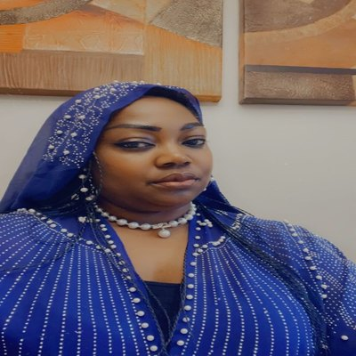
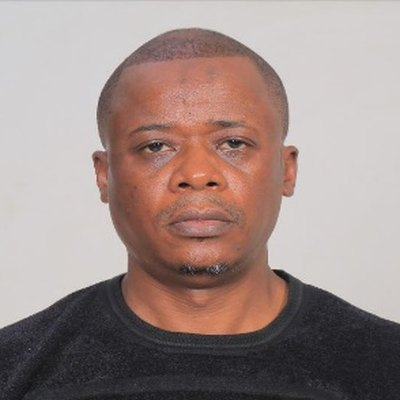
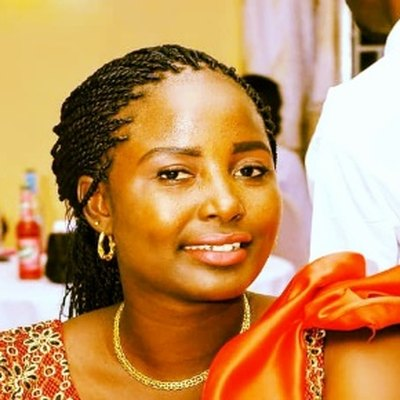
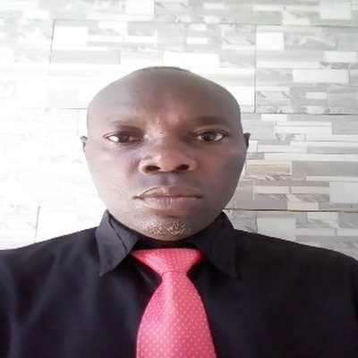
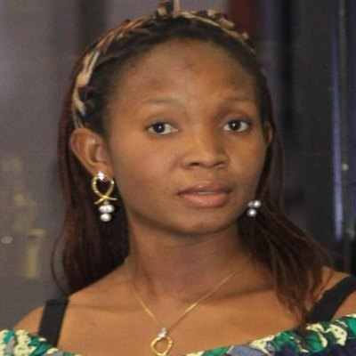
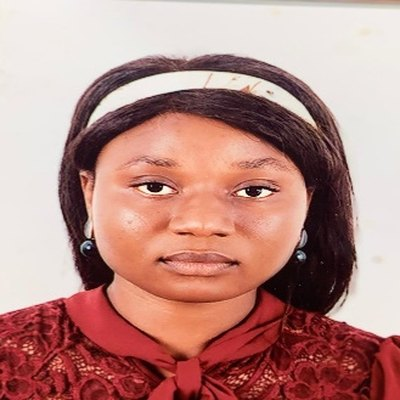
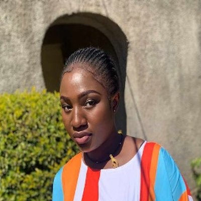
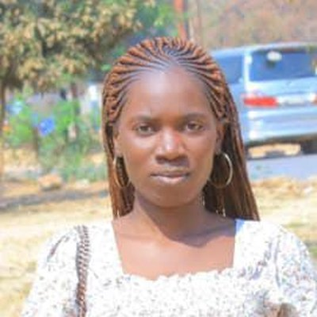

Nine effective members lead the NGO FERCOMEX-TCN.

Michel Mbungulunga Kaozi
President & Founder
Graduate in agriculture and international development from Alfred College of Agri-Food Technology / University of Guelph, Ontario, with two years of business administration studies at the Université de Moncton. CEO and founder of M.K Electro Recycling, he has spent over a decade developing initiatives to empower unprivileged people in Canada and Africa, carrying forward his late father’s dream of contributing to the development of their home communities. He is a member of several plastic recycling groups, the Atlantic Council for International Cooperation, Business Fight Poverty and the Knights of Columbus.

Astride Ngoie Mwema
Vice-President & Co-founder
Graduate in psycho-pedagogy and nursing from the University of Lubumbashi, with 20 years of hospital experience. A co-founder of the NGO, she is devoted to caring for and serving people in need. She speaks French, English, Swahili and Lingala.

Robert Kafunga Lukunku
Executive Director
Law graduate of the University of Lubumbashi (2004) and site manager for ICON GROUP at Tenke Fungurume Mining since 2011. With extensive management experience, he pursues authentic leadership through continuous self-reflection and professional development.

Gloire Kimanu Tshoni
General Treasurer
Holder of a master’s degree in business management and organisation from the Ecole de la Bonne Gouvernance Eco-Politique (ECOPO). Trusted by family and friends to direct and manage their projects thanks to her financial rigour, she has held a senior position in a European brewery in Lubumbashi for the past ten years.

Justin Kahenga-Lagilwa
Project Coordinator & Public Relations
Agricultural engineer from the University of Lubumbashi, agricultural consultant and forest survey expert at the Ministry of Environment, and Doctor of Plants at the Ministry of Agriculture of the DR Congo. He brings both leadership and business experience, and loves working with youth, villagers and nature.

Déborah Beya-Makadi
Funding Manager
Graduate in statistics with a degree in computer networks from the Institut Supérieur de Statistique in Lubumbashi. Very strong with numbers and committed to youth and women’s projects, her energy as a young professional draws other young people towards a love of the land and the environment.

Marie Sibazuri Tumba
General Secretary & Communication Officer
Bachelor’s degree in business and administrative sciences from the Institut Supérieur Pédagogique de Lubumbashi (2022). She completed internships at SNEL (the national electricity company) and at the Provincial Assembly of Lubumbashi.

Francine Kaite-Faila
Secretary & Assistant Treasurer
Diploma in customs and excise from the Higher Institute of Commerce of Lubumbashi, with professional experience at the Congolese National Customs and as a marketing officer for a South African communication company. She joined FERCOMEX to fight poverty through agriculture alongside other young Congolese.

Céline Zabibu Zaidi
Youth Awareness Officer
Bachelor’s degree in financial management, with an internship at the Congolese Control Office (OCC). Skilled in office software and fluent in French and Swahili, she joined FERCOMEX to inspire young people to explore meaningful careers.